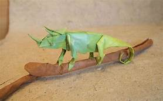

Origami Designs
About Us
Follow Us

Interesting Facts about Chameleon
- Chameleons are reptiles that are part of the iguana suborder
- Changing skin color is an important part of communication among chameleons
- Most chameleons have a prehensile tail that they use to wrap around tree brances
Interesting facts about Pigeon
- Pigeons are incredibly complex and intelligent animals
- Pigeons are renowned for their outstanding navigational abilities
- Pigeons have excellent hearing abilities